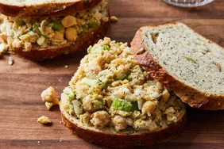
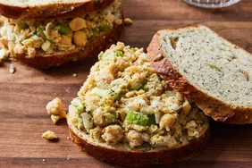

Classic, Hearty Beef Stew
This hearty beef stew is rich, satisfying, and packed with tender beef, lots of vegetables, and fragrant herbs.
Prep Time - 30 mins
Cook Time - 2 hrs 45 mins
Total Time - 3 hrs 15 mins
Servings - 8
Ingredients
- 1 (2 pound) boneless beef round steak, cut into 1-inch cubes
- kosher salt and cracked black pepper to taste
- ¼ cup all-purpose flour
- 1 tablespoon smoked paprika
- 1 tablespoon canola oil
- 3 cups chopped onion
- 6 cloves garlic, minced
- 4 tablespoons tomato paste
- 2 cups dry red wine
- 1 tablespoon dried thyme
- 1 tablespoon dried rosemary
- 1 tablespoon herbes de Provence
- 3 bay leaves
- 2 cups beef broth, or more as needed
- 1 tablespoon Worcestershire sauce
- 3 cups chopped carrots
- 3 cups cubed Yukon Gold potatoes
- 1 cup fresh peas
- 1 ½ teaspoons chopped fresh rosemary
- 1 teaspoon chopped fresh thyme, or to taste
Step 1
Step 2
Step 3
Step 4
Step 5
Step 6
Step 7
Step 8
Step 9
Step 10
Step 11
Directions
Gather all ingredients and preheat the oven to 350 degrees F (175 degrees C).

Season beef with salt and pepper in a large bowl. Add flour and paprika and toss until evenly coated.
Heat oil in a Dutch oven over medium-high heat. Working in batches, sear beef in hot oil, stirring occasionally, until well-browned, 10 to 11 minutes per batch. Transfer beef to a plate and leave drippings in the pot.
Add onion to drippings; season with salt and pepper. Cook and stir until onion begins to caramelize, about 10 minutes. Add garlic and stir until fragrant, about 30 seconds.
Stir in tomato paste; cook until it turns brown and begins to caramelize and stick to the bottom of the pan.
Pour in red wine and bring to a boil while scraping the browned bits of food off the bottom of the pan with a wooden spoon. Cook until wine is almost evaporated, about 3 minutes.
Add thyme, rosemary, herbes de Provence, and bay leaves. Stir in broth and Worcestershire sauce; bring to a boil.
Return beef to the pot, then remove from heat and cover with the lid.
Braise stew in the preheated oven until beef is almost tender, about 1 hour 30 minutes. Remove from the oven.

Add carrots, potatoes, and more beef broth if needed. Cover the pot and return to the oven to braise until beef and vegetables are tender, about 30 minutes more.
Discard bay leaves. Stir in peas, rosemary, and thyme.
Best served hot, Enjoy!
Other Related Recipes
 Cajun Chicken Pasta
Cajun Chicken Pasta
 Easy Homemade Pizza Dough
Easy Homemade Pizza Dough
 Hot Cross Buns

Vegetarian Chickpea Sandwich Fillin
Hot Cross Buns

Vegetarian Chickpea Sandwich Fillin